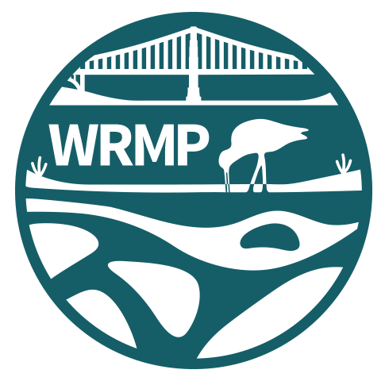

Restoration sites across the Bay form a distributed experiment — benchmark marshes, reference sites, and project sites, each answering different questions about how wetlands recover.
Last updated May 28, 2026
This exhibit is one layer. WRMP's monitoring lives inside a larger data ecosystem — from the Bay-wide EcoAtlas toolset to the raw datasets scientists work with every day.
Exhibit last updated May 28, 2026
Species catalog
JSONEvery fish and invertebrate taxon documented across the estuary, with native and invasive status.
All taxa · Updated Mar 14, 2026
Station network
JSONAll 119 monitoring stations with coordinates, region and network — including the 27 in Delta Smelt habitat.
119 stations · Updated Feb 20, 2026
WRMP Science Framework
WEB REPORTThe monitoring design — management questions, indicators and how the station network answers them.
WRMP · Updated Nov 2, 2023
State of Our Estuary
WEB REPORTRegional status reporting on the estuary's health, habitats and long-term species trends.
SF Estuary Partnership · Updated Sep 15, 2022

Before you can measure restoration success, you need a plan. WRMP's 119 monitoring stations aren't placed at random — they're a carefully designed scientific network spanning three regions of the San Francisco Estuary.
Each station plays a specific role in answering the question: is wetland restoration working?
Benchmark sites are healthy, undisturbed habitats that define what "good" looks like. Scientists measure fish communities here to establish the ecological baseline — the gold standard against which everything else is compared.
These are the control group. If a restored wetland eventually supports the same species diversity and abundance as a benchmark site, restoration is succeeding.
Reference sites are natural areas adjacent to restoration projects. They show what the local ecosystem looks like without intervention — the "before" picture that gives restoration targets their meaning.
Reference Site Candidates are locations being evaluated for this role. Together, these sites form the comparison framework that makes the science rigorous.
These are the restored wetlands being actively monitored — former salt ponds, diked marshlands, and degraded habitats being returned to tidal influence.
By sampling at restored project sites alongside natural reference sites and long-term benchmarks, scientists can directly compare fish communities and track recovery over time.
Across the Bay, 17 planned restoration sites mark where the next chapter of recovery will unfold — 10 in Alviso Marsh, 3 at Eden Landing, and 6 in Suisun Marsh.
Baseline monitoring at these locations will begin before construction starts — establishing what's there before transformation begins. This "before" snapshot is essential to measuring future change.
Benchmark, Reference, Project, Planned — each station type plays a distinct role in the monitoring design. Together they answer the central question: is restoration working?
Are fish communities in restored wetlands approaching those in natural ones? Are the right species returning? Is the ecosystem recovering?
Click the legend to explore each site type, or use the dots below to revisit any step in the story.